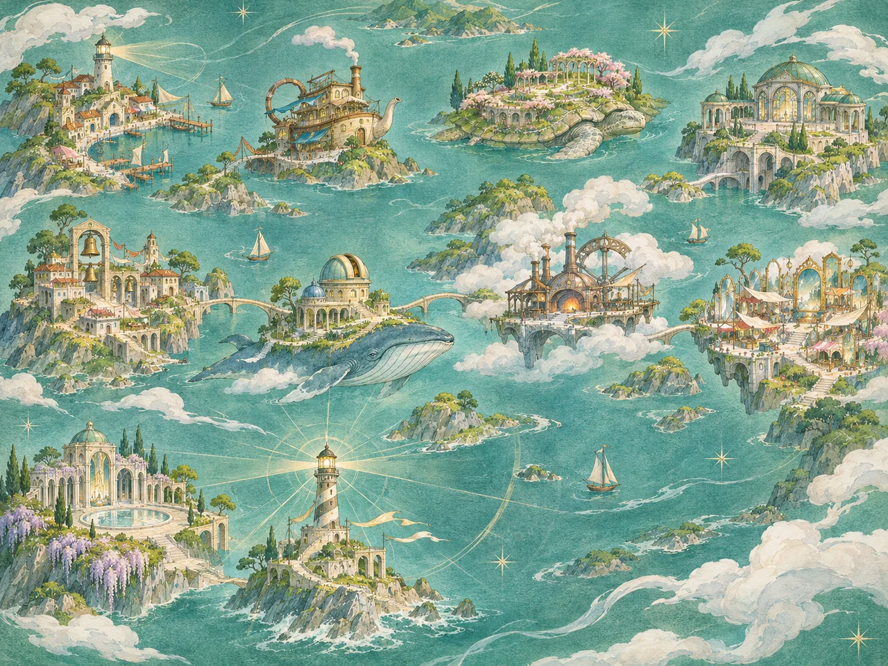

Маяк Между Ветрами
Карты и фигурки ведущего
Игровой комплект
4 игрока · 3 игрока · основной состав · 3 игрока, без героя «Финн Меднолист» · 3 игрока, без героя «Тэс Быстрый Стежок» · 3 игрока, без героя «Ася Вереск»
Карта кампании

Карты и фигурки ведущего
4 игрока · 3 игрока · основной состав · 3 игрока, без героя «Финн Меднолист» · 3 игрока, без героя «Тэс Быстрый Стежок» · 3 игрока, без героя «Ася Вереск»
